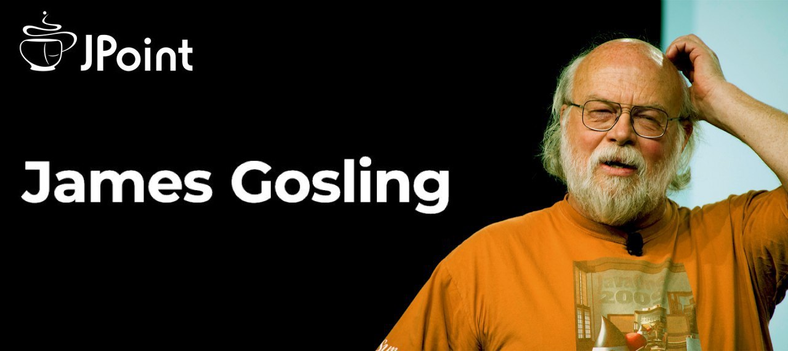

Биография
Java-разработчики знают, что язык и платформу создал Джеймс Гослинг, но зачастую на этом знания о нём и заканчиваются. Кто это вообще такой? Что ещё он делал в жизни? Почему перестал участвовать в работе над Java? Мы считаем, что такие люди заслуживают большего внимания. Поэтому, во-первых, Джеймс появится на нашей онлайн-конференции JPoint и ответит там на многие вопросы. А во-вторых, в этом посте мы расписали заметные вехи его жизни до, во время и после работы над Java. Как он успел насолить Ричарду Столлману? Почему по изначальному плану язык Java вообще не должен был появиться? Какое отношение Гослинг имеет к подводным роботам?
До Java
Первый вопрос: как думаете, где родился Гослинг? Напрашивается ответ «в США», но на самом деле в канадском городе Калгари (). И ещё тинейджером в Канаде он впервые задумался о вещах, впоследствии сказавшихся на Java.
Как Джеймс позже рассказывал, в университете Калгари он занимался программой обработки данных с канадского спутника ISIS 2, работавшие с программой люди постоянно просили его что-то туда добавить, и это раздражало.
В текстовом редакторе
Java

В 1991-м Sun Microsystems затеяли так называемый Green Project, определивший дальнейшую судьбу Гослинга. Интересно, что задумка этого проекта довольно точно предсказала будущее, но сам проект дал человечеству совершенно не то, что от него ожидалось. Сегодня, если спросить случайного айтишника про Java, он может сказать «это язык, популярный в бэкенде веб-сервисов». А на старте Green Project никто не думал в таких категориях: современных веб-сервисов не существовало, а создавать язык программирования там вообще не собирались. Что же собирались сделать? Предвосхитить «следующую волну компьютеризации». В Sun предположили, что вслед за взлётом ПК придут новые «умные» потребительские устройства (от телевизоров до микроволновок), и захотели первыми занять какую-то нишу на этом рынке. Полной определённости «какую именно» не было, компанию интересовали и железо, и софт. Когда пытаешься опередить прогресс и строгие ТЗ невозможны, требуется работа не в корпоративном духе, а в исследовательско-стартаперском. И Green Project, по сути, сделали самостоятельным стартапом. Для него сняли отдельный офис, посадили всю команду из 13 человек туда, дали ей время и бюджет, а коммуникацию между ней и основным офисом минимизировали. То есть у команды было много самостоятельности, но это были не просто теоретические исследования: за отведённое время она должна была сделать что-то такое, на чём Sun дальше сможет зарабатывать. В Green Project делали одновременно и собственный железный прототип нового устройства, и операционную систему для него GreenOS. А вот новый язык для приложений изначально создавать даже не планировали, вместо этого Гослинг собирался выбрать подходящий. Сначала он попытался модифицировать под нужды проекта компилятор C++ (называя эту затею «C++ ++ --»: возьмём С++, что-то добавим, а что-то уберём). Но затем пришёл к выводу, что даже измененённый С++ не подходит, и нужен по-настоящему новый язык. Было несколько разных соображений: в частности, хотелось добиться максимальной независимости от железа (ведь различные «умные устройства будущего» могли быть самыми разными), а сборку мусора автоматизировать. Гослинг принялся за создание подходящего языка — и поначалу назвал его Oak попросту из-за того, что за его офисным окном рос дуб. Он вспомнил то, что ему было известно о UCSD Pascal (тоже довольно независимом от железа языке), а также пообщался с людьми, занимавшимися виртуальной машиной Smalltalk — и вдохновился этим опытом. Тем временем в проекте по-прежнему воспринимали этот язык лишь как вспомогательный инструмент, а не как масштабный самодостаточный продукт. Так что большой команды у Гослинга не появилось, он сам занимался и дизайном языка, и компилятором, и виртуальной машиной. Спустя полтора года работы, осенью 1992-го, у группы было готово устройство-прототип "Star7" и софт для него. Это было нечто вроде пятидюймового КПК — страшно отличающегося от современных устройств, но уже с цветным тачскрином! На этом экране для примера надо было показать что-то яркое, и так возник мультяшный персонаж Дюк, ставший впоследствии маскотом Java. Этот прототип впечатлил в Sun значимых людей вроде Билла Джоя (если имя кажется вам смутно знакомым, вы можете знать его как автора редактора vi, из которого вырос vim). Но он был скорее демонстрацией наработок, чем продуктом, а тем временем пора было переходить к монетизации. У Green Project появилось собственное юрлицо FirstPerson, Inc., теперь это официально была дочерняя компания Sun, и ей надо было разобраться, как зарабатывать. Решено было, что имеющиеся наработки хорошо подойдут для телеприставок, и до 1994-го эту идею предлагали кабельным компаниям вроде Time Warner. Но переговоры с ними не завершились успехом (из 2020-го кажется, что идея просто обогнала своё время: эпоха умных телеприставок пришла позже). Поэтому весь проект оказался под угрозой закрытия. Пока шли переговоры с компаниями, работа над языком продолжалась. Можно посмотреть, например, спецификацию Oak 0.2 и умилиться «детским шагам» («юникод пока нельзя, enum тоже ещё не имплементирован, но всё будет»). Но в 1994-м после жалобы от другой компании, владеющей правами на название Oak, его пришлось переименовать. Тогда и возникло название Java, но затруднительно сказать, кто его автор. Гослинг вспоминал так: «Название появилось на совещании, где около дюжины человек брейнштормили вместе. (...) По сути, совещание было продолжительным диким безумием. Много людей кричало много слов. Кто именно что крикнул — не установить, да и не имеет значения. По ощущениям, там было выкрикнуто большинство слов из словаря. Было много фраз "мне нравится, потому что..." и "мне не нравится, потому что...", и в конце мы сделали список примерно из дюжины названий. Передали его юристам, чтобы они выбрали ближайший к вершине списка вариант, подходящий для регистрации торговой марки. Вариант "Java" был третьим-четвёртым сверху». Примерно в одно время с переименованием произошла и масштабная смена курса. В 1993-м появился популярный браузер Mosaic — и спустя год стало ясно, что веб растёт гигантскими темпами. Пользователей становилось всё больше, и им хотелось уже не только передачи текста, но и чего-то сложнее. При этом у разных пользователей могли быть очень разные компьютеры. И тут внезапно оказался очень уместен язык со слоганом «Write Once Run Anywhere», изначально поставивший себе цель отвязаться от железа. В сентябре 1994-м в Sun прошла внутренняя демонстрация собственного браузера: он мог получать по сети специальные фрагменты Java-кода (апплеты) и исполнять их. Среди тех, кто оценивал разработку, был Эрик Шмидт (на тот момент CTO Sun, позднее — СЕО Google). В компании решили действительно сделать ставку на апплеты. И на SunWorld '95 представили два продукта: Java 1.0 и браузер HotJava. HotJava не стал массово популярен (он был скорее демонстрацией возможностей Java, чем полноценным участником браузерных войн), а вот апплеты действительно стали прорывом: это ж можно теперь прямо в браузере, например, с кем-то в шахматы сыграть! Их поддержку добавили тогдашние короли рынка Netscape и IE, и это позволило Java занять важнейшее место в списке языков. В XXI веке с переходом к другим технологиям все браузеры постепенно убрали поддержку апплетов, и новые поколения Java-разработчиков вообще не сталкиваются с этим понятием. Но благодаря тому начальному рывку Java удалось заполучить и другие рынки, на которых она по-прежнему остаётся — а без него, вероятно, так никогда и не стала бы популярной. Так детище Гослинга, которое в рамках Green Project казалось просто вспомогательной частью системы, оказалось единственной важной для человечества составляющей этой системы и развилось в отдельный продукт.
После Java
Каждое новое изменение, которое что-то ломает, делает больно всему сообществу. Если у тебя не так много программистов, такие изменения не проблема. Кроме того, нужно думать о балансе стоимости и пользы от этих изменений. Меняя что-то, ты добавляешь боли, но одновременно добавляешь и новые возможности@Джеймс Гослинг
Ещё в 2004-м Гослинг признавался: «Я сам не понимаю, в чём сейчас заключается моя работа. В основном провожу время на каких-то совещаниях, где спорю с людьми, а ещё очень активен как евангелист, общаясь с разработчиками по всему миру и получая слишком много авиамиль». Но настоящий разрыв с Java у него произошёл после того, как в 2010-м компания Sun была куплена Oracle. По его словам, переход в новую компанию предполагал его перевод на другую роль со снижением статуса, ограничением возможностей в принятии решений и снижением оплаты. Гослинг не согласился на такие условия и ушёл. Впрочем, при наличии претензий к Oracle он не является радикальным хейтером компании. В том же 2010-м на вопрос о будущем Java он отвечал «у Oracle многое работает на Java, так что у них есть большая мотивация не напортачить, и я смотрю в будущее с осторожным оптимизмом». Также Гослинг поддержал иск Oracle к Google в связи с использованием Java API в Android. По его мнению, Google действительно неправильно поступила по отношению к Sun. В 2007-м при анонсе Android Джонатан Шварц, возглавлявший тогда Sun, в блоге одобрительно высказался об этом. Поэтому со стороны всё выглядело так, будто в Sun никакой проблемы в поведении Google не видели, и только Oracle увидела повод предъявить претензии. Но Джеймс озвучивал другой взгляд изнутри: «Мы все были очень обеспокоены, в том числе и Джонатан, он просто попытался сделать из лимонов лимонад, и в Sun его поведение тогда многих разозлило». Любопытно, что при этом Google оказался следующим его местом работы после Sun, но там он задержался всего на полгода. Уже в сентябре 2011-го Гослинг внезапно перешёл на работу в маленький стартап Liquid Robotics: «в Google я встретил множество интересных людей, но теперь познакомился с другими людьми, делающими нечто вопиющее, и скрепя сердце решил покинуть Google». Этим «чем-то вопиющим» были подводные роботы: автономные устройства, которые перемещаются под водой (порой годами подряд), собирая информацию сенсорами и отправляя её в облако. Это нужно, например, для мониторинга химического состава воды. Гослинг отвечал за софт — как на самих роботах, так и со стороны дата-центра, куда поступала собранная информация. Похоже, ему опять пришлось со стороны софта иметь дело с очень разным железом! Там он провёл шесть лет. Похоже, что работа ему нравилась, но, как он сам отмечал, рассказывать обо всех подробностях он не мог, потому что в этой сфере много строгих NDA. В 2016-м компанию купил Boeing. Получилось, что у Гослинга второй раз подряд произошло то же самое: сначала занимаешься чем-то в формате стартапа, а годы спустя при покупке компании обнаруживаешь себя внутри гиганта. Как и в предыдущий раз, он снова ушёл. Но в этот раз новым местом его работы тоже оказался гигант: он перешёл в AWS на позицию "distinguished engineer" (что бы это ни значило — вот как раз на JPoint можно будет уточнить, чем именно он занимается каждый день). Связан ли он ещё как-то с дизайном языков программирования? Да: помимо основной работы, он является советником компании Lightbend, известной по языку Scala. В 2011-м он сказал «Если бы я сегодня выбирал для использования язык, отличный от Java, выбрал бы Scala». (Прямо ощущаем, как в 2020-м на этом месте у некоторых напрашивается вопрос про Kotlin.) Что ещё можно о нём сказать? Его любимое иррациональное число — корень из двойки. Наверное, тут больше информации даёт не «корень из двойки», а сам тот факт, что у человека есть любимое иррациональное число. Итог получается такой. Когда-то Гослинг в компании Sun сделал язык для проекта, связанного с «умными потребительскими устройствами», а сейчас это выглядит интересной иронией судьбы. И задуманные устройства конкретно тогда не материализовались, и той компании уже нет, и сам он занимается другим — но язык спустя 25 лет после релиза продолжает активно жить, и в том числе на нём пишут приложения для умных устройств. В 1992-м у прототипа был пятидюймовый тачскрин — а теперь у всех людей в кармане по пятидюймовому тачскрину, и на большинстве из них люди видят приложения, написанные на Java. В каком-то смысле исходный план воплотился.